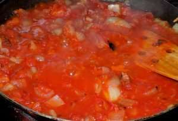

Chakalaka

Description
This sauce recipe hails from chef Sidney, who grew up in South Africa and who for many years taught our culinary travelers French and South African fare.
Chef Sidney shares with us this recipe for Chakalaka: “This spicy tomato and onion sauce is a favorite in South Africa,” he explains, “whether enjoyed with Putu Pap by Zulus and Xhosas or with Barbequed Boerewors by the Afrikaners, or with Grilled Snoek down in the Cape.” Sidney fondly recalls eating Chakalaka with Morogo (wild African spinach) and Putu (a crumbly porridge).
Ingredients
- 6 large, ripe beef tomatoes
- 2 chopped onions
- 2 chopped garlic cloves
- 2 Tbsp vegetable oil
- 1 Tbsp butter
- 4 bird’s eye chiles (sometimes called Thai chiles), seeded and chopped
- 1/2 tsp cayenne
- 1/2 tsp paprika
- salt and freshly ground black pepper
- 1 Tbsp flat leaf parsley, chopped
- 1 Tbsp fresh coriander, chopped
Steps
- Core the tomatoes and chop into 1 cm cubes (do not drain – keep the juice).
- In a saucepan over medium heat, lightly brown the onions in the oil and butter.
- Add the chiles, garlic, cayenne, and paprika, and cook for 2 minutes, stirring constantly.
- Add the tomatoes and simmer for 10 minutes, stirring occasionally, until sauce thickens.
- Season with salt and pepper, add parsley and coriander.